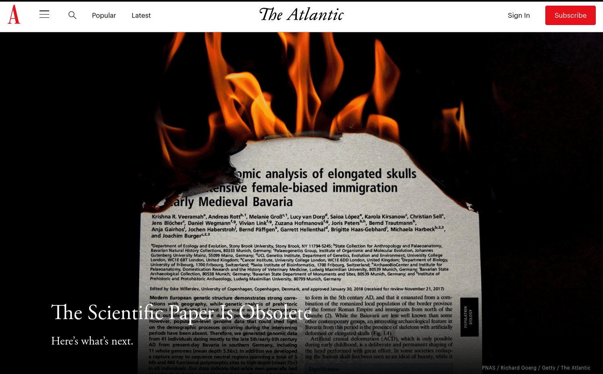

Introduction#
Geographic Data Science#
Before we learn how to do Geographic Data Science or even why you would want to do it, let’s start with what it is. We will rely on two resources:
First, in this video, Dani Arribas-Bel covers the building blocks at the First Spatial Data Science Conference, organised by CARTO
Second, Geographic Data Science, by Alex Singleton and Dani Arribas-Bel [SAB19]
The computational stack#
One of the core learning outcomes of this course is to get familiar with the modern computational environment that is used across industry and science to “do” Data Science. In this section, we will learn about ecosystem of concepts and tools that come together to provide the building blocks of much computational work in data science these days.
{kind=link}
Ten simple rules for writing and sharing computational analyses in Jupyter Notebooks, by Adam Rule et al. [RBZ+19]
{kind=link}
GIS and Computational Notebooks, by Geoff Boeing and Dani Arribas-Bel [BAB20]
{kind=link}
Now we are familiar with the conceptual pillars on top of which we will be working, let’s switch gears into a more practical perspective. The following two clips cover the basics of Jupyter Lab, the frontend that glues all the pieces together, and Jupyter Notebooks, the file format, application, and protocol that allows us to record, store and share workflows.